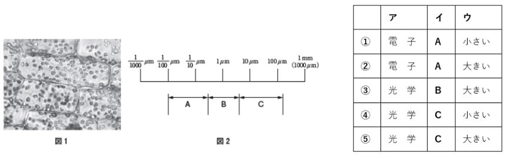

（図1：顕微鏡像 / 図2：大きさの比較スケール）
オオカナダモの細胞を [ ア ] 顕微鏡を使って観察した。オオカナダモの細胞の大きさは、図2の [ イ ] で示される範囲のもので、大腸菌より [ ウ ]。

（図1：顕微鏡像 / 図2：大きさの比較スケール）
| 細胞の構造 | 原核細胞 | 動物細胞 | 植物細胞 |
|---|---|---|---|
| 細胞膜 | ＋ | ＋ | ＋ |
| 核膜 | [ ア ] | ＋ | ＋ |
| ミトコンドリア | ー | ＋ | [ エ ] |
| 葉緑体 | [ イ ] | ー | ＋ |
| 細胞壁 | ＋ | [ ウ ] | ＋ |
※「＋」はある、「ー」はないことを示す。